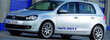

Notícias
| Ouriço achado com fraturas recebe tratamento vip |  | VW divulga plano para carros elétricos e exibe o Golf Blue-e-Motion | |
| Este ouriço teve sorte. Ele foi encontrado com uma perna e bacia fraturadas no jardim de uma casa em Northamptom (Inglaterra) e levada para um hospital veterinário em Buckinghamshire. | A Volkswagem apresentou nesta segunda-feira (3), durante o evento alemão para a apresentação da "Plataforma Nacional para Mobilidade Elétrica", o protótipo 100% elétrico Golf Blue-e-Motion. | ||
| Estadão | Gazeta do Povo |
| Vale vende controle de negócios de alumínio | Toyota divulga informações sobre unidades convocadas do Corolla |
| Pelo valor de US$ 4,9 bi, inclui transação em dinheiro, dívidas e participação em ações; norueguesa Norsk Hydro assume gestão de ativos. leia mais | Fabricante começa a atender os proprietários a partir desta segunda-feira. Empresa recomenda que motoristas retirem o tapete até a verificação. leia mais |
| Av. Araucária, 780 - Vila A - Foz do Iguaçu/PR - Telefone: (45) 3422-5300 |